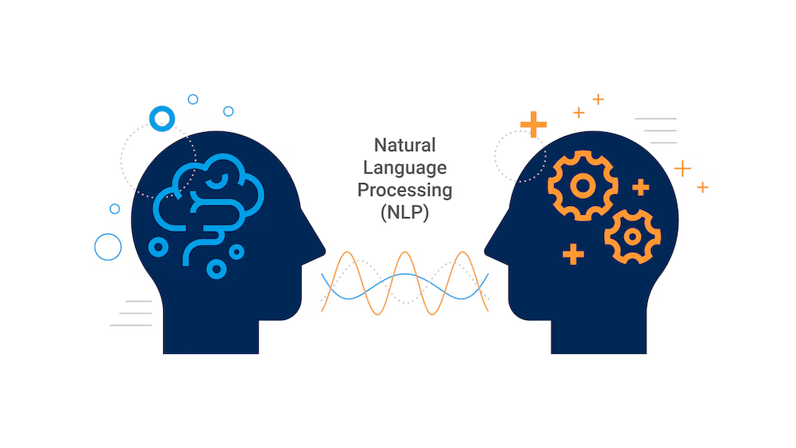

Técnicas avanzadas de NLP
En realidad, interactuamos con la PNL todos los días: las palabras sugeridas al escribir con el teclado del móvil, el spam que filtran automáticamente las aplicaciones de correo, los sitios web en otros idiomas que el software de traducción te ayuda a entender: todas son aplicaciones del Procesamiento del Lenguaje Natural (Natural Language Processing, NLP).
Antes de la llegada de ChatGPT, la PNL ya llevaba décadas desarrollándose, pero la barrera técnica era alta. Necesitabas conocer una larga lista de conceptos como la segmentación de palabras, el etiquetado de partes de la oración, el análisis sintáctico y el etiquetado de roles semánticos, además de diseñar características manualmente para que la máquina "entendiera" un poco el lenguaje.
Hoy, los grandes modelos de lenguaje han simplificado todo esto. Pero comprender la evolución técnica de la PNL te permite entender con mayor profundidad por qué los grandes modelos logran estas cosas y dónde están sus limitaciones.
Este módulo te llevará desde los word embeddings hasta los grandes modelos de lenguaje actuales, construyendo un sistema completo de conocimientos de PNL.。

Ruta de aprendizaje: word embeddings → modelos preentrenados → los tres paradigmas BERT/GPT/T5 → tareas posteriores (clasificación, NER, traducción, resumen). Cada paso tiene ejemplos de código correspondientes para ayudarte a llevar la teoría a la práctica.
Historia de la evolución de los modelos de lenguaje preentrenados
El desarrollo de la PNL se puede dividir claramente en varias etapas, cada una con hitos tecnológicos emblemáticos.
Word2Vec: La revolución de los word embeddings
Antes de 2013, la forma en que las computadoras procesaban el texto era muy primitiva.
Normalmente se usaba la codificación one-hot (One-Hot Encoding): cada palabra correspondía a un vector muy largo, con solo una posición en 1 y el resto en 0. Por ejemplo, si el vocabulario tenía 100,000 palabras, cada palabra era un vector de 100,000 dimensiones.
El problema de este método es evidente: los vectores no contienen información semántica; la distancia entre "gato" y "perro" es la misma que entre "gato" y "mesa".
La idea central de Word2Vec es:El significado de una palabra está definido por las palabras que la rodean.。
Ejemplo
# Demostración de los conceptos básicos de Word2Vec
# Entrenar un modelo simple de word embeddings usando la librería gensim
# ============================================
# Primero instala gensim: pip install gensim
from gensim.models import Word2Vec
import numpy as np
# Preparar los datos de entrenamiento: algunas oraciones simples
sentences = [
["我", "喜欢", "吃", "苹果"],
["我", "喜欢", "吃", "香蕉"],
["猫", "喜欢", "吃", "鱼"],
["狗", "喜欢", "吃", "肉"],
["苹果", "是", "一种", "水果"],
["香蕉", "是", "一种", "水果"],
["猫", "是", "一种", "动物"],
["狗", "是", "一种", "动物"],
["RUNOOB", "是", "一个", "编程", "网站"],
["学习", "编程", "去", "RUNOOB"],
]
# Entrenar el modelo Word2Vec
# vector_size: dimensión del word embedding
# window: tamaño de la ventana de contexto (cuántas palabras antes y después se consideran)
# min_count: ignorar las palabras que aparecen menos veces que este valor
# workers: número de hilos para entrenamiento paralelo
model = Word2Vec(
sentences=sentences,
vector_size=50, # Cada palabra se representa con un vector de 50 dimensiones
window=3, # Considera las 3 palabras anteriores y posteriores
min_count=1, # Se conservan todas las palabras
workers=4,
epochs=100 # Entrenar durante 100 épocas
)
# Obtener el word embedding
apple_vector = model.wv["苹果"]
print(f"'苹果' 的词向量（前 10 维）：{apple_vector[:10]}")
print(f"词向量维度：{len(apple_vector)}")
# Calcular la similitud entre palabras
similarity = model.wv.similarity("苹果", "香蕉")
print(f"'苹果' 和 '香蕉' 的相似度：{similarity:.4f}")
similarity = model.wv.similarity("苹果", "猫")
print(f"'苹果' 和 '猫' 的相似度：{similarity:.4f}")
# Encontrar las palabras más similares
print("\n与 '猫' 最相似的词：")
for word, score in model.wv.most_similar("猫", topn=3):
print(f" {word}: {score:.4f}")
print("\n与 'RUNOOB' 最相似的词：")
for word, score in model.wv.most_similar("RUNOOB", topn=3):
print(f" {word}: {score:.4f}")
# La operación clásica de word embeddings: rey - hombre + mujer ≈ reina
# Probemos con nuestro pequeño corpus: fruta - manzana + pescado ≈ ?
if "苹果" in model.wv and "鱼" in model.wv and "水果" in model.wv:
result = model.wv.most_similar(positive=["水果", "鱼"], negative=["苹果"], topn=3)
print("\n'水果' - '苹果' + '鱼' ≈")
for word, score in result:
print(f" {word}: {score:.4f}")
El éxito de Word2Vec demostró una cosa:La semántica se puede representar mediante un espacio vectorial.。
Pero tiene una limitación: cada palabra tiene un único vector fijo, sin importar el contexto. Por ejemplo, "打" en "打电话" y "打游戏" tiene significados diferentes, pero Word2Vec asigna el mismo vector.
ELMo: Word embeddings contextuales
ELMo (Embeddings from Language Models), que apareció en 2018, resolvió este problema.
El enfoque de ELMo es:No asignar un vector fijo a cada palabra de antemano, sino observar toda la oración y luego generar el vector para esa palabra.。
La misma palabra "打" tiene un vector en "我打电话" y otro en "我打游戏".
ELMo utiliza LSTM bidireccional (red de memoria a largo plazo) para modelar el contexto; esta fue la primera vez que se usó a gran escala el paradigma de "preentrenamiento + ajuste fino" (fine-tuning).
GPT-1: Preentrenamiento unidireccional
También en 2018, OpenAI publicó GPT-1 (Generative Pre-training Transformer).
Sus características son:
1. Usa el decodificador Transformer, en lugar de LSTM.
2. Unidireccional: solo mira las palabras anteriores para predecir la siguiente.
3. Generativo: puede continuar escribiendo texto.
GPT-1 demostró el enorme potencial de Transformer en las tareas de PNL.
BERT: Preentrenamiento bidireccional
A finales de 2018, Google publicó BERT (Bidirectional Encoder Representations from Transformers), lo que revolucionó por completo el campo del NLP.
La innovación central de BERT es:
1. Bidireccional: observa simultáneamente el contexto anterior y posterior.
2. MLM (Masked Language Model): oculta aleatoriamente algunas palabras y hace que el modelo las prediga.
3. NSP (Next Sentence Prediction): determina si dos oraciones son continuas.
BERT logró los mejores resultados en 11 tareas de NLP en ese momento, marcando la entrada del NLP en la "era de los modelos preentrenados".
El salto de GPT-3 a ChatGPT
En 2020, se lanzó GPT-3, con 175 mil millones de parámetros.
La gente descubrió que cuando el modelo es lo suficientemente grande y los datos son suficientes, aparece el fenómeno de "emergencia" (Emergence): el modelo adquiere repentinamente capacidades que los modelos pequeños no tienen, como el aprendizaje con pocos ejemplos y el razonamiento complejo.
A finales de 2022, se lanzó ChatGPT, que mediante RLHF (aprendizaje por refuerzo con retroalimentación humana) hace que las salidas del modelo se ajusten mejor a las preferencias humanas, y la IA realmente llegó al público.
Resumamos esta historia de evolución con una tabla:
| Año | Modelo | Idea principal | Posición histórica |
|---|---|---|---|
| 2013 | Word2Vec | Las palabras circundantes definen su significado | Revolución de los vectores de palabras, representación vectorial de la semántica |
| 2018 | ELMo | Vectores de palabras dependientes del contexto | Primera representación vectorial que logra la polisemia |
| 2018 | GPT-1 | Decodificador Transformer, preentrenamiento unidireccional | Demuestra el potencial de Transformer |
| 2018 | BERT | Codificador Transformer, preentrenamiento bidireccional | El NLP entra en la era de los modelos preentrenados |
| 2020 | GPT-3 | 175 mil millones de parámetros, capacidad emergente | Muestra las infinitas posibilidades de los modelos grandes |
| 2022 | ChatGPT | RLHF + capacidad de diálogo | La IA realmente llega al público |
Análisis profundo de BERT
BERT es un hito en la historia del desarrollo del NLP y merece una comprensión profunda.
Tarea MLM (Modelo de Lenguaje Enmascarado)
La tarea central de preentrenamiento de BERT es MLM: reemplaza aleatoriamente el 15% de las palabras de la oración con [MASK] y hace que el modelo prediga cuál era la palabra original.
Por ejemplo, la oración: "Me gusta comer manzanas", podría convertirse en: "Me [MASK] comer manzanas", y el modelo debe predecir que [MASK] es "gusta".
¿Por qué hacer esto? Porque obliga al modelo a utilizar simultáneamente la información del contexto anterior y posterior, no solo mirar la izquierda o la derecha.
En la práctica, no todas las palabras de ese 15% se reemplazan por [MASK], sino que:
1. El 80% de las veces se reemplaza por [MASK]
2. El 10% de las veces se reemplaza por una palabra aleatoria
3. El 10% de las veces se mantiene la palabra original sin cambios
Esto se hace para que el modelo sea más robusto: no puede estar seguro de si una palabra fue reemplazada o no, debe comprender verdaderamente el contexto.
Tarea NSP (Predicción de Siguiente Oración)
La segunda tarea de preentrenamiento de BERT es NSP: dadas dos oraciones A y B, determinar si B es realmente la siguiente oración después de A.
Ejemplo positivo: A="Me gusta comer manzanas", B="Las manzanas son una fruta"
Ejemplo negativo: A="Me gusta comer manzanas", B="Hoy hace buen tiempo"
Esta tarea ayuda al modelo a comprender la relación entre oraciones, lo cual es muy útil para tareas como preguntas y respuestas, y razonamiento del lenguaje natural.
Casos de uso de BERT
BERT es una arquitectura de "codificador", experta en comprender el lenguaje, adecuada para:
Clasificación de texto, análisis de sentimientos, reconocimiento de entidades nombradas, preguntas y respuestas, razonamiento del lenguaje natural, etc.
No es muy buena generando texto, esa es la fortaleza de GPT.
Flujo estándar de fine-tuning de BERT
Usemos la biblioteca Hugging Face Transformers para ajustar BERT en la práctica para clasificación de texto:
Ejemplo
# Usando Hugging Face para ajustar BERT para clasificación de texto
# Tarea: determinar si la oración es de sentimiento positivo o negativo
# ============================================
# Primero instala las dependencias:
# pip install transformers datasets torch scikit-learn
import torch
from transformers import (
BertTokenizer,
BertForSequenceClassification,
TrainingArguments,
Trainer,
)
from datasets import Dataset, load_metric
import numpy as np
from sklearn.model_selection import train_test_split
# ============================================
# 1. Preparar los datos
# ============================================
# Construir un conjunto de datos simple de clasificación de sentimientos
texts = [
"Este producto es realmente bueno, me gusta mucho",
"La calidad es demasiado mala, muy decepcionado",
"El tutorial de RUNOOB está muy claro y es fácil de aprender",
"La logística fue muy lenta y el embalaje también estaba dañado",
"La cámara de este teléfono toma fotos excelentes",
"La actitud del servicio no es buena, no volveré",
"El contenido del libro es maravilloso, recomiendo comprarlo",
"La película es muy aburrida, me quedé dormido viéndola",
"La comida de este restaurante es deliciosa",
"El juego tiene demasiados bugs, la experiencia es muy mala",
"El tutorial de NLP de RUNOOB es de gran ayuda",
"El diseño de la interfaz de este software es muy bueno",
"El repartidor fue muy amable",
"La talla de la ropa no es correcta y el color tampoco",
"El ambiente del hotel es muy tranquilo, dormí muy bien",
"El servicio al cliente respondió muy lento y el problema no se resolvió",
]
labels = [
1, 0, 1, 0, 1, 0, 1, 0, 1, 0, 1, 1, 1, 0, 1, 0
] # 1=positivo, 0=negativo
# Dividir en conjunto de entrenamiento y validación
train_texts, val_texts, train_labels, val_labels = train_test_split(
texts, labels, test_size=0.25, random_state=42
)
# Crear objeto Dataset
train_dataset = Dataset.from_dict({"text": train_texts, "label": train_labels})
val_dataset = Dataset.from_dict({"text": val_texts, "label": val_labels})
# ============================================
# 2. Cargar el tokenizador y el modelo
# ============================================
# Usar el modelo BERT chino
model_name = "bert-base-chinese"
tokenizer = BertTokenizer.from_pretrained(model_name)
model = BertForSequenceClassification.from_pretrained(
model_name,
num_labels=2 # Tarea de clasificación binaria
)
# ============================================
# 3. Preprocesamiento de datos: convertir el texto en entrada del modelo
# ============================================
def tokenize_function(examples):
return tokenizer(
examples["text"],
padding="max_length",
truncation=True,
max_length=64
)
# Aplicar el preprocesamiento
tokenized_train = train_dataset.map(tokenize_function, batched=True)
tokenized_val = val_dataset.map(tokenize_function, batched=True)
# ============================================
# 4. Definir métricas de evaluación
# ============================================
metric = load_metric("accuracy")
def compute_metrics(eval_pred):
logits, labels = eval_pred
predictions = np.argmax(logits, axis=-1)
return metric.compute(predictions=predictions, references=labels)
# ============================================
# 5. Configurar los parámetros de entrenamiento
# ============================================
training_args = TrainingArguments(
output_dir="./runoob-bert-sentiment", # Directorio de salida
num_train_epochs=3, # Número de épocas
per_device_train_batch_size=4, # Tamaño del lote de entrenamiento
per_device_eval_batch_size=4, # Tamaño del lote de evaluación
warmup_steps=5, # Pasos de calentamiento
weight_decay=0.01, # Decaimiento de pesos
logging_dir="./logs", # Directorio de registros
logging_steps=10,
evaluation_strategy="epoch", # Evaluar una vez por época
save_strategy="epoch",
learning_rate=2e-5,
load_best_model_at_end=True,
)
# ============================================
# 6. Crear el Trainer y comenzar el entrenamiento
# ============================================
trainer = Trainer(
model=model,
args=training_args,
train_dataset=tokenized_train,
eval_dataset=tokenized_val,
compute_metrics=compute_metrics,
)
# Comenzar el entrenamiento (comentado porque requiere mucho tiempo y GPU)
# print("Comenzando el entrenamiento...")
# trainer.train()
# ============================================
# 7. Usar el modelo entrenado para hacer predicciones
# ============================================
# Aquí usamos directamente el modelo original para demostrar el flujo de predicción
# En uso real, se debe usar el modelo guardado después del entrenamiento con trainer
def predict_sentiment(text, model, tokenizer):
"""Predecir el sentimiento de la oración"""
inputs = tokenizer(
text,
return_tensors="pt",
padding=True,
truncation=True,
max_length=64
)
model.eval()
with torch.no_grad():
outputs = model(**inputs)
logits = outputs.logits
probabilities = torch.softmax(logits, dim=-1)
prediction = torch.argmax(probabilities, dim=-1).item()
label_map = {0: "negativo", 1: "positivo"}
confidence = probabilities[0][prediction].item()
return {
"text": text,
"sentiment": label_map[prediction],
"confidence": confidence,
"negative_prob": probabilities[0][0].item(),
"positive_prob": probabilities[0][1].item(),
}
# Probar algunas oraciones
test_texts = [
"¡El tutorial de RUNOOB es realmente genial!",
"La calidad de este producto es muy mala",
"Hoy hace buen tiempo",
"No me gusta mucho esta película",
]
print("Probar la predicción del modelo (usando bert-base-chinese preentrenado):")
print("-" * 50)
for text in test_texts:
# Nota: aquí se usa directamente el modelo original, sin ajuste fino, el efecto es solo para demostración
result = predict_sentiment(text, model, tokenizer)
print(f"Texto: {result['text']}")
print(f"Sentimiento: {result['sentiment']}")
print(f"Confianza: {result['confidence']:.4f}")
print(f"Probabilidad positiva: {result['positive_prob']:.4f}")
print(f"Probabilidad negativa: {result['negative_prob']:.4f}")
print("-" * 50)
Nota: el código anterior demuestra el flujo completo, pero ajustar BERT realmente requiere GPU y bastante tiempo. En entornos de producción, también puedes considerar usar modelos más ligeros (como distilbert), o usar directamente la API de un modelo grande.
Análisis profundo de la serie GPT
GPT (Generative Pre-trained Transformer) tomó un camino diferente al de BERT.
Modelo de lenguaje autorregresivo
GPT es "autorregresivo": genera palabra por palabra, y en cada paso usa todas las palabras generadas anteriormente para predecir la siguiente.
Por ejemplo, para generar "Me gusta comer manzanas", el proceso es:
1. Entrada "Me", predecir que la siguiente palabra es "gusta"
2. Entrada "Me gusta", predecir que la siguiente palabra es "comer"
3. Entrada "Me gusta comer", predecir que la siguiente palabra es "manzanas"
Esta forma es naturalmente adecuada para la generación de texto.
Arquitectura solo-decodificador (Decoder-Only)
GPT solo usa el decodificador de Transformer, mientras que BERT solo usa el codificador.
La característica del decodificador es tener "autoatención enmascarada" (Masked Self-Attention): cada posición solo puede ver las posiciones a su izquierda, no las de la derecha.
Esto es muy razonable, porque al generar texto se hace de izquierda a derecha, no puedes echar un vistazo a las palabras que aún no se han generado.
El descubrimiento de la Scaling Law (Ley de Escalado)
El hallazgo más importante de la serie GPT es la Scaling Law (ley de escala):El rendimiento del modelo sigue una ley de potencia con el tamaño del modelo, la cantidad de datos y la cantidad de cómputo.。
En pocas palabras: cuanto más grande es el modelo, más datos tiene y más tiempo se entrena, mejor es el resultado; además, esta mejora es predecible y no tiene una meseta evidente.
Por eso la serie GPT siempre ha ido "haciéndose más grande": GPT-1 (117 millones) → GPT-2 (1500 millones) → GPT-3 (175 000 millones).
T5 y el paradigma Seq2Seq
Hay un tercer paradigma: la estructura codificador-decodificador (Encoder-Decoder), cuyo representante es T5.
Marco unificado de texto a texto
La idea central de T5 (Text-to-Text Transfer Transformer) es:Unificar todas las tareas de NLP en el formato "texto a texto".。
Por ejemplo:
Clasificación de texto: entrada "Clasificación: esta película es muy buena" → salida "Positivo"
Traducción: entrada "Traduce del inglés al chino: Hello world" → salida "你好世界"
Resumen: entrada "Resumen: este es un artículo sobre..." → salida "Este artículo trata principalmente sobre..."
La ventaja de este marco unificado es que el mismo modelo puede realizar varias tareas sin necesidad de cambiar la estructura del modelo para cada tarea.
Cómo funciona el codificador-decodificador
El codificador se encarga de comprender el texto de entrada, y el decodificador de generar el texto de salida.
Tomando la traducción como ejemplo:
1. El codificador lee "Hello world" y genera una representación "comprendida".
2. El decodificador, basándose en esa representación, genera "你好世界" palabra por palabra.
El decodificador puede "prestar atención" a diferentes posiciones del codificador; por ejemplo, al generar "你好" presta más atención a "Hello", y al generar "世界" presta más atención a "world".
Comparación de tres paradigmas: BERT vs GPT vs T5
Comparemos estas tres arquitecturas con una tabla:
| Característica | BERT | GPT | T5 |
|---|---|---|---|
| Arquitectura | Encoder-only | Decoder-only | Encoder-Decoder |
| Atención | Bidireccional (ve el contexto anterior y posterior) | Unidireccional (solo ve el contexto anterior) | Codificador bidireccional, decodificador unidireccional |
| Tarea de preentrenamiento | MLM (predicción de palabras enmascaradas) | Modelado autorregresivo de lenguaje | Span Corruption |
| Tareas en las que destaca | Comprensión: clasificación, NER, preguntas y respuestas | Generación: continuación de texto, diálogo | Transformación: traducción, resumen, paráfrasis |
| Modelo representativo | BERT、RoBERTa、ALBERT | GPT-1/2/3/4、ChatGPT | T5、BART、mT5 |
| Aplicaciones típicas | Análisis de sentimiento, filtro de spam | Asistente de redacción, chatbot de conversación | Traducción automática, resumen de documentos |
Hoy en día, la mayoría de los modelos grandes adoptan la arquitectura solo-decodificador (ruta GPT), porque tiene el mejor rendimiento en generación y puede seguir mejorando mediante la Scaling Law. No obstante, en tareas específicas, las otras dos arquitecturas todavía tienen ventajas.
Clasificación de texto
La clasificación de textos es una de las tareas de NLP más comunes y también la mejor tarea de introducción para principiantes.
Clasificación multiclase en la práctica
La clasificación multiclase consiste en asignar una etiqueta al texto, y la etiqueta tiene varias opciones.
Por ejemplo: clasificación de noticias (tecnología, deportes, entretenimiento, finanzas), clasificación de tickets de atención al cliente, clasificación de reseñas de productos, etc.
Ejemplo
# Clasificación de textos en la práctica: comparación de varios enfoques
# ============================================
from typing import List, Dict, Any
# ============================================
# Enfoque 1: aprendizaje automático tradicional + TF-IDF
# Adecuado para conjuntos de datos pequeños, alta interpretabilidad
# ============================================
def traditional_text_classification_demo():
"""Clasificación de texto con métodos tradicionales"""
from sklearn.feature_extraction.text import TfidfVectorizer
from sklearn.naive_bayes import MultinomialNB
from sklearn.pipeline import Pipeline
# Datos de entrenamiento
texts = [
"Hoy compré una acción y subió mucho",
"La inversión periódica en fondos es una buena forma de gestionar las finanzas",
"El delantero de este equipo marcó un gol",
"Los playoffs de la NBA son emocionantes",
"La cámara de este teléfono móvil toma fotos estupendas",
"Los tutoriales de programación de RUNOOB son muy claros",
"La trama de esta película es conmovedora",
"Las canciones de ese álbum suenan muy bien",
]
labels = ["Finanzas", "Finanzas", "Deportes", "Deportes", "Tecnología", "Tecnología", "Entretenimiento", "Entretenimiento"]
# Crear el pipeline: TF-IDF + Naive Bayes
pipeline = Pipeline([
("tfidf", TfidfVectorizer()), # Convertir el texto en características TF-IDF
("classifier", MultinomialNB()), # Clasificador Naive Bayes
])
# Entrenamiento
pipeline.fit(texts, labels)
# Prueba
test_texts = [
"Las acciones bajaron y estoy de mal humor",
"El partido de baloncesto se decidió con una canasta ganadora en el último segundo",
"El nuevo portátil tiene un rendimiento muy potente",
"El nuevo tutorial de NLP de RUNOOB",
]
predictions = pipeline.predict(test_texts)
probabilities = pipeline.predict_proba(test_texts)
print("Enfoque 1: aprendizaje automático tradicional + TF-IDF")
print("-" * 50)
for text, pred, probs in zip(test_texts, predictions, probabilities):
print(f"Texto: {text}")
print(f"Predicción: {pred}")
print(f"Probabilidades por clase: {dict(zip(pipeline.classes_, probs))}")
print()
# ============================================
# Enfoque 2: usar Hugging Face pipeline
# Adecuado para prototipos rápidos, sin necesidad de entrenamiento
# ============================================
def huggingface_pipeline_demo():
"""Usar el pipeline preentrenado de Hugging Face"""
print("Enfoque 2: Hugging Face Pipeline")
print("-" * 50)
try:
from transformers import pipeline
# Usar el pipeline de análisis de sentimiento (inglés)
classifier = pipeline("sentiment-analysis")
test_texts = [
"I love RUNOOB tutorials!",
"This movie is terrible.",
]
results = classifier(test_texts)
for text, result in zip(test_texts, results):
print(f"Texto: {text}")
print(f"Sentimiento: {result['label']}")
print(f"Confianza: {result['score']:.4f}")
print()
except Exception as e:
print(f"Primero hay que instalar transformers: pip install transformers")
print(f"Error: {e}")
# ============================================
# Enfoque 3: usar API de modelos grandes (recomendado)
# Adecuado para entornos de producción, con los mejores resultados
# ============================================
def llm_based_classification_demo():
"""Clasificación de texto con un modelo grande (simulación)"""
print("Enfoque 3: clasificación con modelo grande (idea de demostración)")
print("-" * 50)
# En uso real, llama a APIs como OpenAI/Anthropic
# Aquí se muestra el diseño del prompt de clasificación
def classify_with_llm(text: str, categories: List[str]) -> Dict[str, Any]:
"""Función simulada para clasificar con un LLM"""
# En un escenario real: llamar a la API del LLM
# prompt = f"""Clasifica el siguiente texto y devuelve solo el nombre de la categoría.
# Texto: {text}
# Categorías disponibles: {', '.join(categories)}"""
# Aquí se hace una simple coincidencia de palabras clave para simular
category_map = {
"Finanzas": ["acciones", "fondos", "finanzas personales", "inversión"],
"Deportes": ["baloncesto", "fútbol", "partido", "gol"],
"Tecnología": ["móvil", "computadora", "programación", "tutorial"],
"Entretenimiento": ["película", "música", "álbum", "canción"],
}
for category, keywords in category_map.items():
if any(keyword in text for keyword in keywords):
return {
"category": category,
"confidence": 0.9,
"reasoning": f"Palabras clave encontradas: {', '.join([k for k in keywords if k in text])}"
}
return {"category": "Otros", "confidence": 0.5}
test_texts = [
"Las acciones subieron y estoy muy contento",
"El Mundial de fútbol ha comenzado",
"El nuevo tutorial de programación de RUNOOB",
]
categories = ["Finanzas", "Deportes", "Tecnología", "Entretenimiento", "Otros"]
for text in test_texts:
result = classify_with_llm(text, categories)
print(f"Texto: {text}")
print(f"Categoría: {result['category']}")
print(f"Confianza: {result['confidence']:.4f}")
if "reasoning" in result:
print(f"Motivo: {result['reasoning']}")
print()
# ============================================
# Ejecutar la demostración
# ============================================
if __name__ == "__main__":
traditional_text_classification_demo()
print("=" * 50)
llm_based_classification_demo()
Métodos de clasificación con pocos ejemplos (few-shot)
El aprendizaje con pocos ejemplos (Few-Shot Learning) es una nueva capacidad aportada por los modelos grandes: con solo dar unos ejemplos, el modelo aprende a clasificar.
Por ejemplo:
Texto: este producto funciona muy bien → Etiqueta: positivo
Texto: la calidad es muy mala → Etiqueta: negativo
Texto: [tu nuevo texto] → Etiqueta: ?
Con estos dos ejemplos, el modelo grande puede entender la tarea y hacer una clasificación razonable del texto nuevo.
Elección entre modelos grandes y modelos pequeños
¿Cuándo usar cada enfoque? Aquí hay una guía para decidir:
| Escenario | Enfoque recomendado | Razón |
|---|---|---|
| Volumen de datos pequeño (< 1000 registros) | Aprendizaje con pocas muestras en modelos grandes | Los modelos pequeños no aprenden bien; los modelos grandes tienen mayor capacidad de generalización |
| Volumen de datos grande (> 10000 registros) | Ajuste fino de un modelo pequeño (como BERT) | Menor costo, inferencia más rápida |
| Necesidad de validación rápida | API de modelos grandes | Sin entrenamiento, listo para usar |
| Entorno de producción, alto rendimiento | Ajuste fino de modelo pequeño + destilación | Inferencia rápida, costo controlable |
| Las categorías cambian con frecuencia | Ingeniería de prompts con modelos grandes | No requiere reentrenar, basta con cambiar el prompt |
Reconocimiento de entidades nombradas (NER)
El reconocimiento de entidades nombradas (Named Entity Recognition, NER) consiste en encontrar entidades específicas en el texto, como nombres de personas, lugares y organizaciones.
Marco de etiquetado de secuencias
NER suele modelarse como una tarea de "etiquetado de secuencias": asignar una etiqueta a cada palabra para indicar si forma parte de una entidad.
Por ejemplo, la oración: "Zhang San trabaja en Google", el etiquetado podría ser:
Zhang San → B-PER (inicio de persona)
en → O (no entidad)
Google → B-ORG (inicio de organización)
trabaja → O
Formato de etiquetado BIO
El formato de etiquetado más común es BIO:
B-XXX: inicio de entidad
I-XXX: interior de entidad
O: no entidad
Por ejemplo: "Wang Xiaoming trabaja en Microsoft en Beijing", el etiquetado es:
王 → B-PER
小 → I-PER
明 → I-PER
在 → O
北 → B-LOC
京 → I-LOC
的 → O
微 → B-ORG
软 → I-ORG
公 → I-ORG
司 → I-ORG
上 → O
班 → O
Aplicación práctica
Hagamos NER con Hugging Face:
Ejemplo
# Práctica de NER: uso de Hugging Face para reconocimiento de entidades nombradas
# ============================================
def ner_with_huggingface():
"""Usar un modelo NER preentrenado"""
print("Práctica de NER: Hugging Face")
print("-" * 50)
try:
from transformers import pipeline
# Cargar el pipeline de NER
# NER en inglés
ner_pipeline = pipeline(
"ner",
model="dbmdz/bert-large-cased-finetuned-conll03-english",
grouped_entities=True # Combinar múltiples tokens de la misma entidad
)
test_text = "John Smith works at Google in New York City. He loves RUNOOB tutorials."
results = ner_pipeline(test_text)
print(f"Texto: {test_text}")
print("Entidades reconocidas:")
for entity in results:
print(f" - {entity['word']}: {entity['entity_group']} (confianza: {entity['score']:.4f})")
print()
except Exception as e:
print(f"Primero debe instalar transformers: pip install transformers")
print(f"Error: {e}")
# ============================================
# NER en chino: uso de expresiones regulares + palabras clave (caso simple)
# ============================================
def simple_chinese_ner():
"""NER chino simple: uso de expresiones regulares y diccionarios"""
import re
print("NER chino simple: regex + diccionario")
print("-" * 50)
# Diccionario de entidades (en la práctica sería más grande)
person_names = ["Zhang San", "Li Si", "Wang Xiaoming", "Liu Dehua"]
organizations = ["Google", "Microsoft", "Alibaba", "Tencent", "RUNOOB"]
locations = ["Beijing", "Shanghai", "Shenzhen", "Nueva York", "Londres"]
# Patrones de expresiones regulares
patterns = {
"PERSON": "|".join(re.escape(name) for name in person_names),
"ORG": "|".join(re.escape(org) for org in organizations),
"LOC": "|".join(re.escape(loc) for loc in locations),
"PHONE": r"1[3-9]\d{9}", # Número de teléfono móvil
"EMAIL": r"\w+@\w+\.\w+", # Correo electrónico
}
def extract_entities(text: str):
"""Extraer entidades del texto"""
entities = []
for entity_type, pattern in patterns.items():
for match in re.finditer(pattern, text):
entities.append({
"text": match.group(),
"type": entity_type,
"start": match.start(),
"end": match.end(),
})
# Ordenar por posición
entities.sort(key=lambda x: x["start"])
return entities
# Prueba
test_texts = [
"Zhang San trabaja en Google, su número de móvil es 13800138000",
"Wang Xiaoming fue a la empresa Microsoft en Beijing por negocios",
"Si tienes problemas, contacta support@runoob.com",
"RUNOOB es un excelente sitio web de aprendizaje",
]
for text in test_texts:
entities = extract_entities(text)
print(f"Texto: {text}")
if entities:
print("Entidades reconocidas:")
for ent in entities:
print(f" - {ent['text']}: {ent['type']}")
else:
print("No se reconocieron entidades")
print()
# ============================================
# Modelos grandes para NER
# ============================================
def ner_with_llm():
"""Demostración de la idea de usar modelos grandes para NER"""
print("Modelos grandes para NER (idea de demostración)")
print("-" * 50)
def extract_entities_with_llm(text: str):
"""Uso de LLM para NER (simulación)"""
# En la práctica: construir un prompt para llamar al LLM
# prompt = f"""Extrae las entidades nombradas del siguiente texto.
# Devuelve solo en formato JSON, con los tipos de entidad: PERSON (persona), ORG (organización), LOC (lugar).
# Texto: {text}"""
# Aquí hacemos una simulación simple
entities = []
# Simulación con coincidencia simple de palabras clave
if "Zhang San" in text:
entities.append({"text": "Zhang San", "type": "PERSON"})
if "Google" in text:
entities.append({"text": "Google", "type": "ORG"})
if "Beijing" in text:
entities.append({"text": "Beijing", "type": "LOC"})
if "RUNOOB" in text:
entities.append({"text": "RUNOOB", "type": "ORG"})
return entities
test_text = "Zhang San trabaja en Google en Beijing, y a menudo visita RUNOOB para aprender"
entities = extract_entities_with_llm(test_text)
print(f"Texto: {test_text}")
print("Entidades reconocidas:")
for ent in entities:
print(f" - {ent['text']}: {ent['type']}")
# ============================================
# Ejecutar demostración
# ============================================
if __name__ == "__main__":
simple_chinese_ner()
print("=" * 50)
ner_with_llm()
Traducción automática
La traducción automática es una de las aplicaciones más clásicas del NLP y también una de las primeras en comercializarse.
Principios de la traducción automática neuronal
Las primeras traducciones automáticas eran basadas en reglas, luego estadísticas, y ahora son neuronales.
La traducción automática neuronal (Neural Machine Translation, NMT) suele tener una arquitectura Encoder-Decoder:
1. El Encoder lee la oración en el idioma fuente y genera una representación semántica
2. El Decoder genera la oración en el idioma destino a partir de la representación semántica
El mecanismo de atención permite que el decodificador, al generar cada palabra, "preste atención" a diferentes partes de la oración en el idioma fuente; esto es clave para mejorar la calidad de la traducción.
Métrica de evaluación: BLEU Score
¿Cómo medir la calidad de la traducción? BLEU (Bilingual Evaluation Understudy) es la métrica más utilizada.
La idea central de BLEU es:Cuanto mayor sea la coincidencia de n-gramas entre la traducción automática y la traducción humana, mejor será la calidad.。
La puntuación BLEU va de 0 a 1; cuanto más alta, mejor. Generalmente:
Por debajo de 0.1: básicamente incomprensible
0.1-0.3: se entiende aproximadamente
0.3-0.5: calidad de traducción bastante buena
Por encima de 0.5: cerca de la traducción humana
Ejemplo
# Demostración de cálculo de la puntuación BLEU
# ============================================
def bleu_score_demo():
"""Demostrar el cálculo de la puntuación BLEU"""
print("Demostración de puntuación BLEU")
print("-" * 50)
# Nota: en la práctica se recomienda usar la librería sacrebleu
# Aquí se hace una demostración conceptual
from collections import Counter
import math
def compute_ngrams(tokens, n):
"""Calcular n-gramas"""
return [tuple(tokens[i:i+n]) for i in range(len(tokens)-n+1)]
def simple_bleu(reference: str, candidate: str, max_n: int = 4):
"""Cálculo simple de BLEU (demostración conceptual)"""
ref_tokens = reference.split()
cand_tokens = candidate.split()
# Calcular la penalización por brevedad (brevity penalty)
ref_len = len(ref_tokens)
cand_len = len(cand_tokens)
if cand_len == 0:
return 0.0
if cand_len <= ref_len:
bp = math.exp(1 - ref_len / cand_len)
else:
bp = 1.0
# Calcular la precisión de cada n-grama
precisions = []
for n in range(1, max_n + 1):
ref_ngrams = Counter(compute_ngrams(ref_tokens, n))
cand_ngrams = Counter(compute_ngrams(cand_tokens, n))
if not cand_ngrams:
precisions.append(0.0)
continue
# Contar el número de coincidencias
matches = 0
for ngram, count in cand_ngrams.items():
matches += min(count, ref_ngrams.get(ngram, 0))
total = sum(cand_ngrams.values())
precisions.append(matches / total if total > 0 else 0.0)
# Media geométrica
if all(p == 0 for p in precisions):
geo_mean = 0.0
else:
# Evitar log(0)
log_sum = sum(math.log(p + 1e-10) for p in precisions) / max_n
geo_mean = math.exp(log_sum)
bleu = bp * geo_mean
return bleu
# Prueba
reference = "the cat sat on the mat"
candidates = [
"the cat sat on the mat", # Coincidencia exacta
"the cat was on the mat", # Una palabra diferente
"the cat sat on a mat", # Diferente artículo
"a cat sat on the mat",
"the dog sat on the mat", # Una palabra incorrecta
"mat the on sat cat the", # Orden completamente desordenado
"hello world", # Completamente irrelevante
]
print(f"Traducción de referencia: {reference}")
print()
for candidate in candidates:
bleu = simple_bleu(reference, candidate)
print(f"Traducción candidata: {candidate}")
print(f"Puntuación BLEU: {bleu:.4f}")
print()
# Ejemplo en chino
print("Ejemplo de traducción:")
print("-" * 30)
ref = "me gusta comer manzanas"
cand1 = "me gusta comer manzanas"
cand2 = "me encanta comer manzanas"
cand3 = "manzanas me gusta comer"
print(f"Referencia: {ref}")
print(f"Candidato 1: {cand1}, BLEU: {simple_bleu(ref, cand1):.4f}")
print(f"Candidato 2: {cand2}, BLEU: {simple_bleu(ref, cand2):.4f}")
print(fCandidato 3: {cand3}, BLEU: {simple_bleu(ref, cand3):.4f})
if __name__ == "__main__":
bleu_score_demo()
Calidad de traducción en la era de los LLM
Tras la aparición de los grandes modelos, la calidad de la traducción automática ha dado un salto.
Los modelos de traducción tradicionales se entrenan con datos bilingües paralelos, mientras que los grandes modelos se entrenan con enormes cantidades de texto, lo que les da una comprensión más profunda del lenguaje.
Ventajas de los grandes modelos en la traducción:
1. Mejor comprensión del contexto: pueden manejar ambigüedades y palabras polisémicas
2. Control de estilo: se puede especificar el tono y el estilo de la traducción
3. Consistencia terminológica: se puede proporcionar un glosario para garantizar la coherencia en la traducción de nombres propios
4. Capacidad multilingüe: un solo modelo puede traducir entre decenas o cientos de idiomas
Análisis de sentimientos
El análisis de sentimientos consiste en determinar la tendencia emocional de un texto: positiva, negativa o neutra.
Análisis de sentimientos de grano fino
El análisis de sentimientos simple es una clasificación binaria (positivo/negativo), pero uno más granular puede ser:
1. Puntuación de sentimiento: de 1 a 5 estrellas, donde 1 es lo más negativo y 5 lo más positivo
2. Clasificación de emociones: ira, alegría, tristeza, sorpresa, etc.
3. Análisis de sentimiento por aspectos (Aspect-Based Sentiment Analysis): no solo juzga el sentimiento general, sino que también analiza el sentimiento sobre aspectos específicos.
Por ejemplo: 'La comida de este restaurante es deliciosa, pero el servicio es demasiado lento'
Sentimiento general: neutral, ligeramente positivo
Sentimiento por aspectos:
Comida → positivo
Servicio → negativo
Modelos multilingües de sentimientos
Los modelos de sentimiento actuales pueden procesar varios idiomas sin necesidad de entrenar un modelo por separado para cada idioma.
Modelos multilingües comunes:
Grandes modelos como XLM-RoBERTa, mBERT (BERT multilingüe), Llama, Claude, etc.
Resumen de texto
El resumen de texto consiste en acortar un texto largo conservando la información clave.
Resumen extractivo vs. generativo
Hay dos tipos principales de resumen:
Resumen extractivo: seleccionar las oraciones más importantes del texto original y unirlas.
Ventajas: información precisa, no inventa contenido
Desventajas: puede no ser fluido y contener información redundante
Resumen generativo: hacer que el modelo 'comprenda' el texto original y luego escriba un resumen con sus propias palabras.
Ventajas: fluido, conciso, puede resumir el texto original
Desventajas: puede 'alucinar' e inventar información que no está en el texto original
En la era de los grandes modelos, el resumen generativo se ha convertido en el estándar, pero hay que prestar atención al problema de la alucinación.
Métrica de evaluación ROUGE
¿Cómo se evalúa la calidad de un resumen? ROUGE es la métrica más utilizada.
ROUGE tiene varias variantes:
ROUGE-1: basado en la coincidencia de unigramas (palabras individuales)
ROUGE-2: basado en la coincidencia de bigramas (pares de palabras)
ROUGE-L: basado en la subsecuencia común más larga
Al igual que BLEU, ROUGE también mide el solapamiento entre el resumen generado por la máquina y el resumen de referencia humano.
Ejemplo
# Resumen de texto: métrica ROUGE + resumen extractivo simple
# ============================================
def rouge_demo():
"""Demostración de la métrica ROUGE"""
print("Demostración de la métrica ROUGE")
print("-" * 50)
from collections import Counter
def compute_rouge_1(reference: str, candidate: str) -> float:
"""Calcular ROUGE-1 (F1 de unigramas)"""
ref_tokens = reference.split()
cand_tokens = candidate.split()
if not ref_tokens or not cand_tokens:
return 0.0
ref_counts = Counter(ref_tokens)
cand_counts = Counter(cand_tokens)
# Calcular el número de coincidencias
matches = 0
for token, count in cand_counts.items():
matches += min(count, ref_counts.get(token, 0))
precision = matches / len(cand_tokens)
recall = matches / len(ref_tokens)
if precision + recall == 0:
return 0.0
f1 = 2 * precision * recall / (precision + recall)
return f1
def compute_lcs(a: list, b: list) -> int:
"""Calcular la longitud de la subsecuencia común más larga"""
m, n = len(a), len(b)
dp = [[0] * (n + 1) for _ in range(m + 1)]
for i in range(1, m + 1):
for j in range(1, n + 1):
if a[i-1] == b[j-1]:
dp[i][j] = dp[i-1][j-1] + 1
else:
dp[i][j] = max(dp[i-1][j], dp[i][j-1])
return dp[m][n]
def compute_rouge_l(reference: str, candidate: str) -> float:
"""Calcular ROUGE-L (F1 de subsecuencia común más larga)"""
ref_tokens = reference.split()
cand_tokens = candidate.split()
if not ref_tokens or not cand_tokens:
return 0.0
lcs_len = compute_lcs(ref_tokens, cand_tokens)
precision = lcs_len / len(cand_tokens)
recall = lcs_len / len(ref_tokens)
if precision + recall == 0:
return 0.0
f1 = 2 * precision * recall / (precision + recall)
return f1
# Prueba
reference = "El procesamiento del lenguaje natural es una rama importante de la inteligencia artificial que estudia la interacción entre las computadoras y el lenguaje humano."
candidates = [
"El procesamiento del lenguaje natural es una rama importante de la inteligencia artificial que estudia la interacción entre las computadoras y el lenguaje humano.", # Coincidencia exacta
"El procesamiento del lenguaje natural estudia la interacción entre las computadoras y el lenguaje humano, y es una rama importante de la inteligencia artificial.", # Cambio de orden
"El procesamiento del lenguaje natural es una rama de la inteligencia artificial que estudia la interacción entre las computadoras y el lenguaje.", # Versión abreviada
"RUNOOB es un sitio web de aprendizaje de programación.", # No relacionado
]
print(f"Resumen de referencia: {reference}")
print()
for candidate in candidates:
rouge1 = compute_rouge_1(reference, candidate)
rougel = compute_rouge_l(reference, candidate)
print(f"Resumen candidato: {candidate}")
print(f"ROUGE-1: {rouge1:.4f}")
print(f"ROUGE-L: {rougel:.4f}")
print()
def simple_extractive_summarization():
"""Resumen extractivo simple: seleccionar oraciones importantes basándose en la frecuencia de palabras"""
print("Demostración de resumen extractivo simple")
print("-" * 50)
import re
from collections import Counter
def split_sentences(text: str) -> list:
"""Segmentación simple de oraciones en chino"""
# Dividir por punto, signo de exclamación y signo de interrogación
sentences = re.split(r'[。！？]', text)
# Filtrar cadenas vacías
sentences = [s.strip() for s in sentences if s.strip()]
return sentences
def get_word_frequency(text: str) -> Counter:
"""Calcular la frecuencia de palabras (demostración simple: simulación con n-gramas a nivel de caracteres)"""
# En un escenario real, se debería usar una herramienta de segmentación de palabras, como jieba
# Aquí se usan simplemente unigramas
chars = [c for c in text if c.strip()]
return Counter(chars)
def sentence_score(sentence: str, word_freq: Counter) -> float:
"""Calcular la puntuación de las oraciones"""
if not sentence:
return 0.0
# Puntuación simple: suma de frecuencias de las palabras en la oración / longitud de la oración
total_score = 0.0
for char in sentence:
total_score += word_freq.get(char, 0)
# Normalizar
return total_score / (len(sentence) + 1)
def extractive_summary(text: str, num_sentences: int = 2) -> str:
"""Resumen extractivo"""
sentences = split_sentences(text)
if len(sentences) <= num_sentences:
return text
# Calcular la frecuencia de palabras
word_freq = get_word_frequency(text)
# Calcular la puntuación de cada oración
scores = [(i, sentence_score(s, word_freq)) for i, s in enumerate(sentences)]
# Ordenar por puntuación y seleccionar las más altas
scores.sort(key=lambda x: x[1], reverse=True)
top_indices = [i for i, score in scores[:num_sentences]]
top_indices.sort() # Mantener el orden del texto original
# Concatenar los resultados
summary = "。".join(sentences[i] for i in top_indices) + "。"
return summary
# Texto de prueba
test_text = """
El procesamiento del lenguaje natural es una rama importante de la inteligencia artificial. Estudia cómo hacer que las computadoras comprendan y generen el lenguaje humano.
Esta tecnología tiene muchas aplicaciones, incluyendo traducción automática, análisis de sentimientos, sistemas de preguntas y respuestas, etc.
En los últimos años, la aparición de los grandes modelos de lenguaje ha supuesto un gran avance en el procesamiento del lenguaje natural.
El sitio web RUNOOB ofrece muchos tutoriales de programación excelentes que ayudan a los desarrolladores a aprender nuevas habilidades.
"""
print("Texto original:")
print(test_text.strip())
print()
summary = extractive_summary(test_text, num_sentences=2)
print("Resumen extractivo:")
print(summary)
if __name__ == "__main__":
rouge_demo()
print("=" * 50)
simple_extractive_summarization()
Haz clic para compartir notas
<p style="font-size:14px;">¡Las notas deben ser una extensión del contenido de este artículo!</p><br> <p style="font-size:12px;"><a href="../tougao.html" target="_blank">Puedes hacer clic aquí para enviar un artículo</a></p> <p style="font-size:14px;"><a href="../w3cnote/runoob-user-test-intro.html" target="_blank">Cómo obtener el código de invitación para registrarse</a></p> <h3 class="text-muted"><i class="fa fa-info-circle" aria-hidden="true"></i> Antes de compartir notas, debes <a href=";.html" class="runoob-pop">iniciar sesión</a>!</h3> <p><a href="../w3cnote/runoob-user-test-intro.html" target="_blank">Cómo obtener el código de invitación para registrarse</a></p>